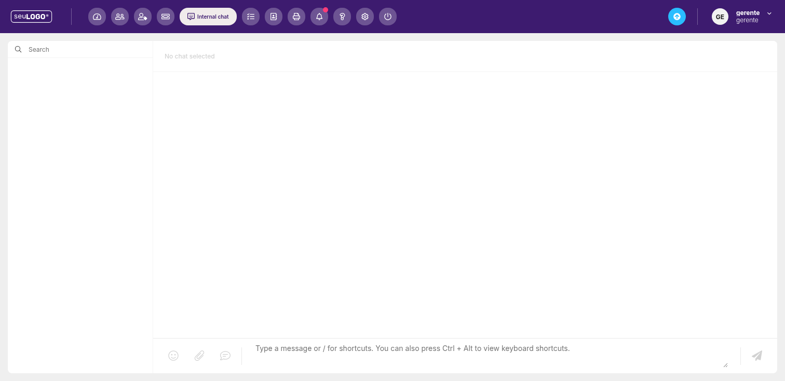

Chat Interno
Converse com a equipe sem expor o cliente. Troque mensagens, anexos e use atalhos de produtividade.

1. Para que serve
O Internal Chat é um canal de conversa entre colaboradores da empresa. Diferente do atendimento ao cliente, aqui a comunicação fica restrita à equipe — útil para alinhar respostas, pedir ajuda a um colega ou repassar contexto.
2. Como usar
- Na barra lateral esquerda, use o campo Search para encontrar o colega ou grupo.
- Selecione a conversa desejada (o texto inicial mostra “No chat selected”).
- Digite a mensagem no campo inferior e envie pelo ícone de avião de papel.
3. Recursos do campo de mensagem
- Emoji — ícone de sorriso para inserir emojis.
- Anexo — clipe de papel para enviar arquivos.
- Modelos — balão de comentário para usar respostas/modelos.
- Atalhos — digite
/para ver atalhos;Ctrl + Altabre a lista de atalhos de teclado.
Boa prática: use o chat interno para dúvidas rápidas entre agentes, mantendo o canal de atendimento ao cliente focado no cliente.